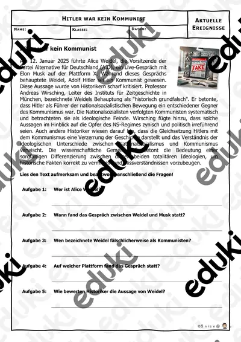
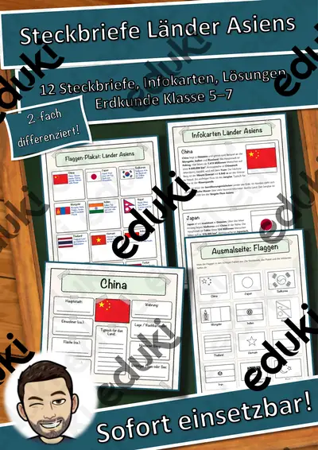
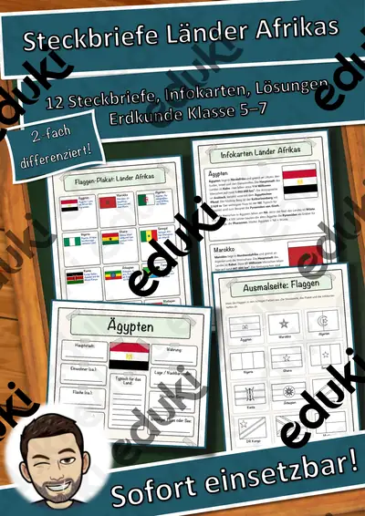
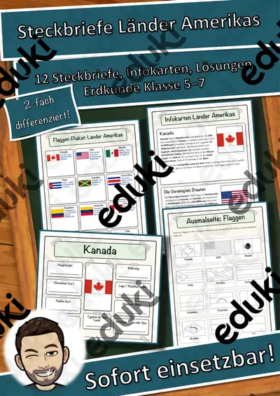

Materialpaket Steckbriefe Länder Europa #demokratiestärken
Mit diesem Materialpaket erhalten Sie alle 46 Steckbriefe zu den Ländern Europas in einem Sparpaket.
Es handelt sich um folgende Steckbriefe:
Albanien
Andorra
Belgien
Bosnien und Herzegowina
Bulgarien
Dänemark
Deutschland
Estland
Finnland
Frankreich
Griechenland
Irland
Island
Italien
Kosovo
Kroatien
Lettland
Liechtenstein
Litauen
Luxemburg
Malta
Monaco
Montenegro
Niederlande
Nordmazedonien
Norwegen
Österreich
Polen
Portugal
Republik Moldau
Rumänien
Russland
San Marino
Schweden
Schweiz
Serbien
Slowakei
Slowenien
Spanien
Tschechien
Türkei
Ukraine
Ungarn
Vatikanstadt
Vereinigtes Königreich
Weißrussland / Belarus
Zypern#demokratiestärkendemokratiestärken
FachErdkunde
KlasseKl. 3–9
SchulformGrundschule, Sek I Mittlere Schulform, Sek I Gymnasium
MaterialartStundenentwürfe, Unterrichtsreihen, Arbeitsblätter, Stationenlernen
Ähnliche Materialien

Materialpaket Parteien im Bundestag - Politik - Demokratie Deutschland -Bundestagswahl 2025 #demokratiestärken

Deutschland: Steckbrief Bundesländer Deutschland Materialpaket Bundesländer Deutschland #demokratiestärken

Hitler war kein Kommunist - Aktuelle Ereignisse #demokratiestärken

Steckbriefe Länder Asiens – Materialpaket (12 Länder mit Flaggen, differenziert, mit Lösungen)

Steckbriefe Länder Afrikas – Materialpaket (12 Länder mit Flaggen, differenziert, mit Lösungen)

Steckbriefe Länder Amerikas – Materialpaket (12 Länder aus Nord-, Mittel- und Südamerika mit Flaggen, differenziert, mit Lösungen)

Europäische Union - Merk es dir! #demokratiestärken